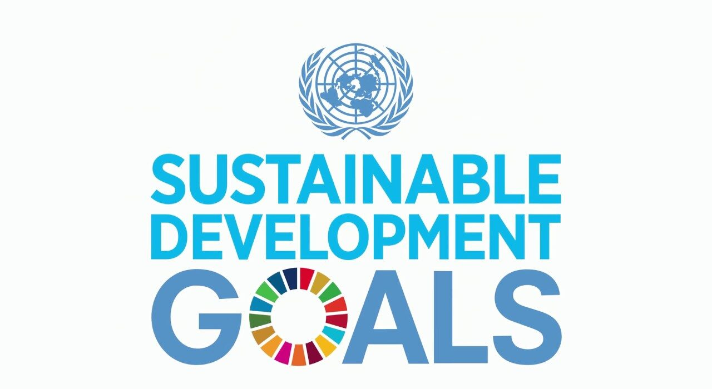
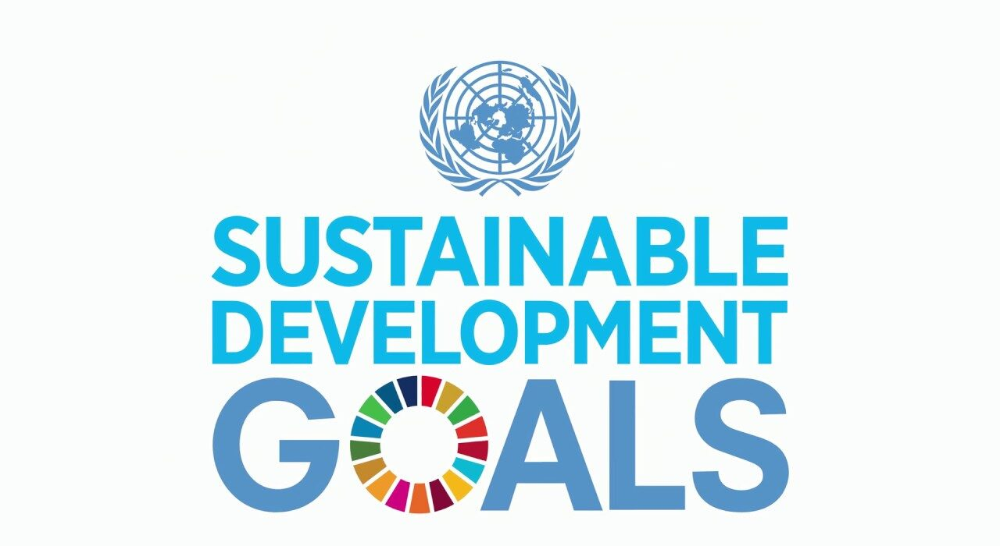

Dapat dikatakan bahwa kerja sama antara Indonesia dalam bentuk bilateral, multilateral, maupun regional. Berperan sangat penting dalam mpencapaian tujuan SDGs. Hubungan ini tidak hanya membantu Indonesia dalam mencapai tujuan ekonomi, sosial, dan budaya, tetapi juga dalam mengatasi berbagai tantangan secara global yang kompleks. Dengan adanya kerja sama internasional, terdapat pendorong bagi Indonesia agar dapat mendapatkan inovasi dalam hal teknologi, kualitas pendidikan, lingkungan, layanan kesehatan, infrastruktur, dan banyak lagi.
Kerjasama secara regional seperti yang dilaksanakan oleh Indonesia dengan negara-negara ASEAN dengan adanya kebijakan AEC (ASEAN Economic Community) terdorong inovasi dan infrastruktur karena adanya integrasi ekonomi. Dengan peningkatan kerjasama antar kawasan terdapat lingkungan bagus karena terjadi peningkatan dalam pendidikan, layanan kesehatan, infrastruktur, dan lain-lain.
Kerjasama secara multilateral yang melibatkan banyak organisasi internasional seperti AIIB, UNESCO, dapat memperkuat hubungan negara secara global untuk mengatasi isu global bersama. Seperti ketimpangan sosial, pembangunan infrastruktur yang inklusif, dan banyak lagi. Melalui kerjasama ini, dapatnya dukungan dari negara anggota lain dalam mencapai SDGs secara tidak langsung.
Secara keseluruhan untuk mencapai SDGs diperlukan komitmen dan kolaborasi andair semua negara di dunia. Ini dapat membangun kerjasama dan hubungan yang erat melalui kerjasama bilateral, regional, dan multilateral. Kerjasama internasional ini sangat efektif untuk mengatasi masalah global yang menciptakan dunia yang lebih adil, setara, dan berkelanjutan bagi semua.